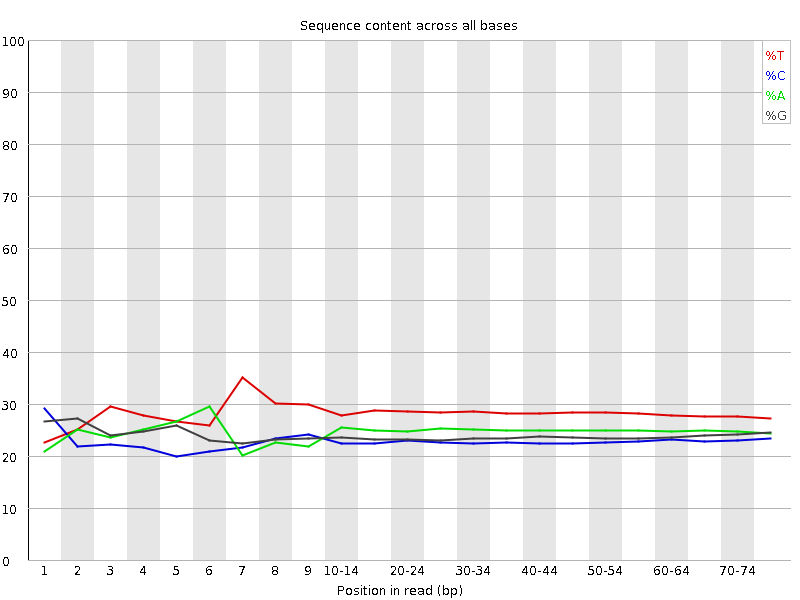
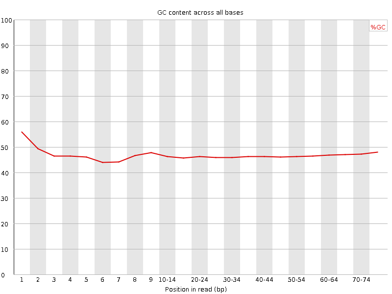
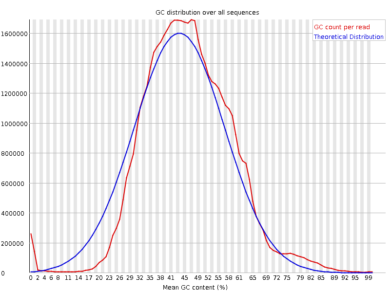
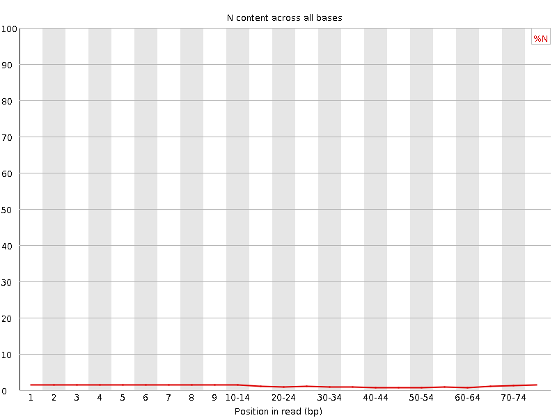
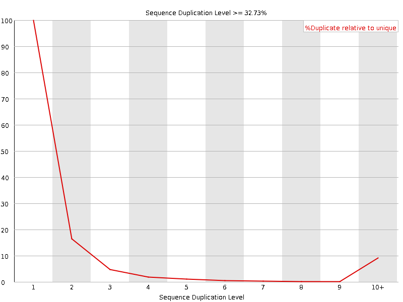
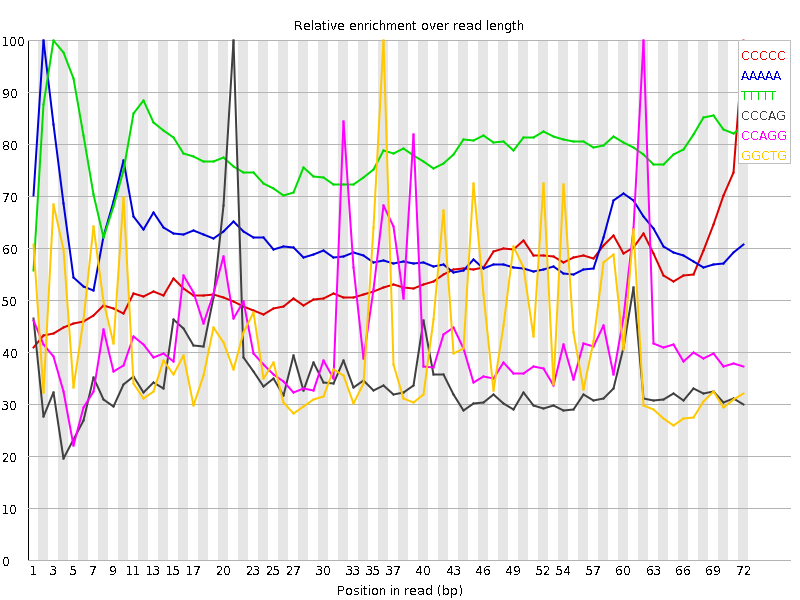

![[OK]](Icons/tick.png) Basic Statistics
Basic Statistics
| Measure | Value |
|---|---|
| Filename | SRR315306_2.fastq |
| File type | Conventional base calls |
| Encoding | Sanger / Illumina 1.9 |
| Total Sequences | 40441408 |
| Filtered Sequences | 0 |
| Sequence length | 76 |
| %GC | 46 |
![[FAIL]](Icons/error.png) Per base sequence quality
Per base sequence quality

Per sequence quality scores

![[WARN]](Icons/warning.png) Per base sequence content
Per base sequence content

Per base GC content

Per sequence GC content

Per base N content

Sequence Length Distribution

Sequence Duplication Levels

Overrepresented sequences
| Sequence | Count | Percentage | Possible Source |
|---|---|---|---|
| NNNNNNNNNNNNNNNNNNNNNNNNNNNNNNNNNNNNNNNNNNNNNNNNNN | 261767 | 0.647274694293532 | No Hit |
| CTGGCTGCGACATCTGTCACCCCATTGATCGCCAGGGTTGATTCGGCTGA | 70968 | 0.17548350443189317 | No Hit |
| GGGCGATCTGGCTGCGACATCTGTCACCCCATTGATCGCCAGGGTTGATT | 65387 | 0.16168329253026997 | No Hit |
| CCTGCCAGTAGCATATGCTTGTCTCAAAGATTAAGCCATGCATGTCTAAG | 62977 | 0.15572405392018002 | No Hit |
| CGGTGGCGCGTGCCTGTAGTCCCAGCTACTCGGGAGGCTGAGGCTGGAGG | 58970 | 0.14581589246348692 | No Hit |
| CGATCTGGCTGCGACATCTGTCACCCCATTGATCGCCAGGGTTGATTCGG | 57693 | 0.14265823781407413 | No Hit |
| GCGATCTGGCTGCGACATCTGTCACCCCATTGATCGCCAGGGTTGATTCG | 48713 | 0.12045327403041953 | No Hit |
| CGGTGGCGCGTGCCTGTAGTCCCAGCTACTCGGGAGGCTGAGGTGGGAGG | 40987 | 0.10134909249450465 | No Hit |
Kmer Content

| Sequence | Count | Obs/Exp Overall | Obs/Exp Max | Max Obs/Exp Position |
|---|---|---|---|---|
| CCCCC | 6481585 | 3.596161 | 6.6026087 | 72 |
| AAAAA | 9632465 | 3.4533424 | 5.644232 | 2 |
| TTTTT | 16877465 | 3.227814 | 4.100345 | 3 |
| CCCAG | 5926655 | 2.8965416 | 8.210781 | 21 |
| CCAGG | 5867995 | 2.7567868 | 6.3732715 | 62 |
| GGCTG | 6850960 | 2.7285256 | 6.382857 | 36 |
| GGGGG | 5810390 | 2.6459394 | 7.601408 | 71 |
| CTGGG | 6299680 | 2.5089676 | 5.770247 | 71 |
| GGAGG | 5471435 | 2.3752065 | 6.610391 | 33 |
| CTGGC | 5216375 | 2.1612353 | 5.676573 | 56 |
| CCAGC | 4297010 | 2.1000829 | 7.3575063 | 22 |
| TCCCA | 5024075 | 2.064294 | 6.2359962 | 20 |
| GCCTG | 4914475 | 2.0361528 | 6.6891913 | 12 |
| CAGGA | 4707440 | 2.0265956 | 5.86735 | 63 |
| GGGAG | 4603935 | 1.9986159 | 6.4009113 | 32 |
| TGCCT | 5631485 | 1.9615597 | 5.657884 | 11 |
| CCCCA | 3788850 | 1.9263456 | 5.0597 | 20 |
| GAGGC | 4237365 | 1.9136065 | 6.621074 | 34 |
| AGGAG | 4562005 | 1.8879105 | 5.3452682 | 64 |
| CTGAG | 4907825 | 1.863336 | 5.515844 | 38 |
| AGGCT | 4844255 | 1.8392006 | 5.6201067 | 35 |
| GAGGA | 4248970 | 1.7583661 | 5.4542627 | 47 |
| GGTGG | 4503800 | 1.7242453 | 5.748865 | 2 |
| CAGCT | 4256485 | 1.6811632 | 5.6535044 | 23 |
| GCTGA | 4339655 | 1.647621 | 5.422414 | 37 |
| TGAGG | 4440370 | 1.6205583 | 5.178741 | 39 |
| CCTGT | 4421595 | 1.5401307 | 5.158217 | 13 |
| GTGGC | 3742710 | 1.4906057 | 5.5077395 | 3 |
| GTGCC | 3028765 | 1.2548703 | 5.2247596 | 10 |
| GTCCC | 2781250 | 1.1987536 | 5.2809043 | 19 |
| GGCGC | 2248975 | 1.108339 | 5.909744 | 5 |
| GCGCG | 1804650 | 0.8893668 | 5.58214 | 6 |